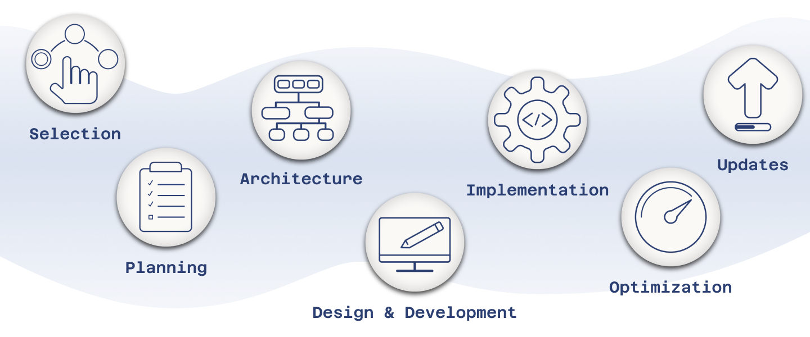

<div class="row" >
  
</div>
<div class="row tiles">
    <div class="col-md-6 col-lg-4">
    {% include tile.html %}
    </div>
  </div>
<div class="row">
    <div class="{% if two_col %}col{% else %}col-md-10 col-lg-12 mx-auto{% endif %}">
      <div class="row">
        <div class="col">
  
          {{ content }}
  
        </div>